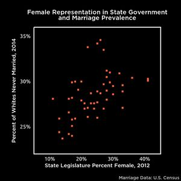

Causes of celibacy
There are diverse causes of celibacy (whether voluntary or involuntary),[1][2][3] e.g. any flaw that negatively impacts sexual market value or any sociocultural, economic or personal circumstance that hinders marriage or more generally pair formation. The line between celibacy and inceldom is blurry. Some celibates might only experience inceldom some of the time. Some may lie about their voluntariness due to sexual modesty norms and social desirability bias. A rare minority reports to be truly asexual, making up as much as half of adult virgins (who are also rare).[1] There currently is an increasing trend in celibacy. This article discusses both causes of celibacy, inceldom, and the causes of the recent increase in sexlessness (see also the demographics page for data on these trends).
Causes of sexlessness and inceldom[edit | edit source]
- Social/sexual exclusion and rejection hindering socialization, access to members of the opposite sex and marriage. Possibly caused by neurodivergence or physical anomalies due to mutations or pollutants/developmental disturbances.
- Mental disorders, neurodivergence, autism, schizophrenia and anorexia nervosa are some of the strongest predictors of sexlessness, especially in males.[4] In one study, high functioning autistic men were 5 times more likely sexually inexperienced than their neurotypical counterparts.[5] Lack of flirting skills has been identified as a main cause of inceldom.[6]
- Being bullied, ostracized and rejected by one's peers or being socially withdrawn during childhood are predictors of adulthood virginity.[7][8] The vast majority of users on incels.co said they were bullied at some point in their lifetime, whether it was during childhood, adolescence or adulthood, and many regard themselves as autistic (see demographics).
- Being physically unattractive. In one study, people of either sex with below-average attractiveness had a 1.5-3x higher chance of remaining virgin during early adulthood compared to people of above-average attractiveness. However, all 26 very unattractive guys in the study did have sex by the time they were around 28 years old, and being good looking appears to be slightly more useful for women than it is for men in lowering the chances of adult virginity.[9] Among adult virgins aged 28, only 0-3% of men and 1-8% of women were judged as "very unattractive" (a two or less, p = 0.02).[9] Add Health data also suggests that unattractive men are not more likely see prostitutes. However, half of the adult virgins in this study having reported to have no interest in sex, and it is unknown whether attractive virgins were more likely volcels than unattractive virgins. Looks are strongly linked to initial romantic interest; however, they are only linked moderately to romantic initiation and weakly to long-term romantic success. In some samples, looks are even unrelated to lifetime reproductive success. Furthermore, looks were also a secondary factor in arranged marriages, which are or were the primary means of deciding matrimonial bonds in certain cultures (see beauty).
- High BMI or being overweight[9] Some of the link between looks and sexual behavior may also be mediated by health as looks and health are linked weakly though consistently.
- Premature birth[10]
- Disease, e.g. in a German sample, those with poor general health were only around 40% as likely to have had sex in the past four weeks compared to those in good health,[11] though in a student sample, immunocompetency was not linked to mating performance[12]
- Low social status or peer status,[13] with the socially excluded having very low status.
- Physical disability. In a sample of physically disabled individuals, 47% did not have a partner, while in a matching sample of non-disabled individuals, 30% did not have a partner.[14]
- For men (not women), low IQ predicts fewer offspring,[15] similar to the effect of mental disorders.
- Slow-life history strategy inherited from the parents thus potentially accompanied by an overall sex-negativity and high achievement expectations. Slow LH types are often volcels. Slow LH may be related to adaptations for (late) arranged marriage as a stable bond of marriage enables investment in the offspring. Hence slow LH volceldom may eventually turn into inceldom, if marriage gets delayed too much or never occurs, or when there is a lack of guidance toward marriage. In fact, lack of flirting skill has been identified as the main cause of inceldom, which may disproportionally affect slow-life strategists for whom contemporary overemphasis on free mating is particularly unnatural.[6][16][17][18]
- Asexuality/volceldom is by far the strongest predictor of virginity around the age of 28, with about half of them stating they never felt attraction to the opposite sex while asexuals only make up 1% of the general population.[9] Could be mutation or slow-life trait.
- Starting puberty late as a male or being physically immature compared to your peers as a teenager,[19] with slow sexual maturation being a primary marker of slow life history genetics.
- Shyness or social anxiety, no flirting skills, approach anxiety.[2] Could be mutation or slow-life trait. Possibly an adaptation for arranged marriage.[2] Due to women's passive courtship style, introversion and social anxiety have been found to substantially reduce men's mating success more than women's.[20]
- Niceness tends to slightly reduce physical attractiveness of men to women and agreeable men have a somewhat lower income,[21] which due to women's preference for affluent men may also explain some of men's low sexual success, however out of the Big Five personality traits, only extraversion is related to men's reproductive success.[22] Extroversion may correlate with the willingness and ability to intimidate other males, which one study has shown to predict men's access to females (even more so than women's own choices, which actually had a non-significant impact on men's mating outcomes).[23]
- Long education is a significant predictor of early adult virginity,[24] though in one study only for women (long-education femcels).[9] The phenomenon of educated women refusing to date down is also discussed in the hypergamy article, though it is unclear whether this tendency is really due to refusal to date down, or being too busy and hitting the wall, or facing evolutionary mismatches regarding an exchange of sex in return for resources.
- Lower use of alcohol and drugs,[1][9][3] possibly causally at individual level.[24]
- Living with both biological parents[1]
- Having a highly educated mother[1]
- Having caring and monitoring parents.[3]
- Having received more sexual education.[3]
- Fast LH acquaintances might cause envy and inceldom in those who have a slower LH speed
- Low socio-economic status,[3] unemployment, affecting men more detrimentally than women.[25]
- High mate choice standards, however standardcels are mostly volcels[26]
- Low mating effort, especially in case of women (which is further evidence of Briffault's law),[27] often volcels
- High achievement standards,[1] with today's students rather working to make ends meet than engaging binge drinking and sex,[28] however career-focused singles tend to report they focus on their career because they are single rather than they stay single in order to focus on their careers[29]
- Female race preferences (see ethnicel), with Asian-American males yielding the highest incel rates (see demographics and the Scientific Blackpill), which could be partly explained by female hypergamy and by slow LH predisposition.
- A high degree of neoteny in males might give rise to the cutecel phenomenon. Neoteny is related to late maturation and slow life history, possibly evoking inceldom in neotenous adult and adolescent males due to envy toward faster LH-strategic peers who are already in relationships. In an informal survey by ABs (German incels), there may have been an overrepresentation of particularly neotenous males with nearly two thirds saying they are typically perceived as younger than they are.[30] Cute looking and relatively frail overall physic may loose out in dominance competitions,[31] especially in the modern, potentially evolutionarily mismatching fast-life dating context.
- Fast-life strategists have an overall higher sex drive, hence may experience inceldom and dryspells as a greater psychological burden.
- Good looks might matter more in fast LH, short-term context[32]
- Fast life history races/immigrants living in slow LH host countries with increasingly strong norms against teen sexuality and casual sexuality (though also benefiting from laxer norms regarding out-of-wedlock births and sexuality).
- The psychological burden of inceldom is likely often amplified by sexual envy provoked by sexually successful fast LH types boasting about having sex and fast LH women self-sexualizing online and in public, which they appear to do more in areas with greater economic inequality.[33]
- Ideology and religion can be either a positive or negative factor:
- Religious or strict environment predicts remaining virgin during early adulthood.[3][9]
- Sex-negativity within puritanical religions (see Christocel and Muslimcel) or ideologies like feminism or environmentalism.[34]
- Parents who do not care about their children marrying/reproducing due to disinterest or ideology, mismatching the universal prevalence of marriage and arranged marriage across human societies.
- Weakly enforced monogamy and marriage likely causes unstable relationships which in turn causes dry spells.
- Husbandcels in dead bedroom marriages, as women lose their sex drive much sooner than men, seemingly especially when cohabiting closely.[35]
- A string of bad luck
- Only met fast life history BPD chicks who crave being humiliated by Chad
- No access to opposite sex partners e.g. due to location, life situation, low prevalence of same-aged people, skewed sex ratios, etc.
Incel and volcel categories[edit | edit source]
One can broadly distinguish different demographic groups that experience mating difficulties or voluntarily abstain from sex:
- Late adult virgins, perma-virgins etc.: Virgins older than 30 are rare (1-2%)[36] and they strongly differ from the overall population.
- By far the most distinguishing feature of adult virgins aged around 28 years, is that about 50% identify as asexuals (volcels) while only 1% of the overall population identifies as asexual.[9][37] In one national probability sample, there were 29.23% of males in the sample of asexuals (N = 195), but 43.17% among sexuals (N = 18,426, X² = 15.30, p < 0.001),[37] suggesting women are more likely volcels, in accordance with their lower sex drive. But provided that male perma-virgins outnumber female perma-virgins in various countries, should suggest that voluntary femcels are somewhat overrepresented among perma-virgins.
- Adult virgins are also a bit more likely overweight, low-functioning and/or physically unattractive when compared to sex havers, and they tend to have markers of a slow life history, e.g. lower engagement in risky behavior, later onset of puberty, are more often East Asian.[9] Further, there is an overrepresentation of women getting college degrees.[9] Overall, however, looks are only weakly related to sexual success.[38]
- Early adult virgins: This category is increasingly common these days, with about half of U.S. 12th graders never having dated. This being a much larger demographic group than late adult virgins, it is expected to differ much less from the overall population.
- Dry spells: Even more common is the category of the sexually frustrated or those experiencing dry spells with 51% of U.S. millenials not having had a steady partner in 2018, and roughly 30% reporting to be often or always lonely.[39] Being a large share of the population, this group is expected to differ very little from the overall population.
- Dead bedroom: A special incel case is that of husbandcels in dead bedroom couples, as women lose their sex drive much sooner than men, especially when cohabiting closely.[40] This affects about 10-20% of couples.[41]
- By life history speed:
- Fast life history incels may be the most sexually frustrated and may be facing an evolutionary mismatch due to a recent decline in casual sexual behavior and related risky behavior during adolescence and early adulthood, or fast life history minorities living in a host population with a slow life history (see the race section). However, despite sexual activity during youth having declined in the U.S., a minority of fast life history strategists appears to be having more sex than ever at the same time.[42]
- Slow life history incels may also be facing an evolutionary mismatch, such as expecting to be married as was common throughout history, but not getting married due to the recent decline in marriage norms,[43] or women getting college degrees refusing to date down.
Potential causes of the recent increase in inceldom[edit | edit source]

As summarized in the demographics article, there is a trend towards less sex that appears to have accelerated recently. The decline in sexual activity can be traced back to 1930-born cohorts (despite the number of lifetime sex partners increasing) and it is not attributable to increased pornography use or working hours and is present in both the married and unmarried.[44]
Along with the increase in inceldom, there is a decline in causal sexual activity and other risky behavior in the young. Among young women, 25% in variation of this decline is explained by less alcohol drinking. Among young men, different factors predict a significant decline in casual sex: Less drinking, more computer gaming, and cohabitation with parents. There is no evidence that trends in young adults’ economic circumstances, internet use, or TV watching explain the recent decline casual sexual activity,[45] with excessive pornography consumption even rather correlating with a fast life history speed.[46] In addition to cohabitation with parents, males also experience declining independence in terms of driver license ownership,[47] Alcohol consumption in particular may causally affect sexual behavior at the individual level.[24]
This trend toward slow LH strategies and high achievement expectations seems to be disproportionately affecting women, resulting in long-education femcels.
Greater sexual sex-determination and reproductive autonomy for women, rape hysteria and ensuing legislation may increase the incidence of sexlessness among the married, leading to husbandcels.
With regards to fast life history speed, there is an increase in risk-aversion reducing the of rate causal sex (and increasing inceldom as a side-effect), and, on the other side there is a departure from (or deferral of) marriage traditions accompanied by increase in women's sexual self-determination, increasing inceldom and sexlessness among slow life history strategists as well.
There are a number of conceivable causes for these trends:
-
Evolutionary mismatch: Circumstances are so different from natural human nature that they adversely affect human sexuality, i.e. that our adaptation mismatch our environment.
- Hyper-individualism: Historically, marriages were predominantly arranged, so people may be confused with the entire notion of finding a partner without guidance by the parents etc. or community, especially since communities are increasingly deteriorating (possibly due to an aging population).[48] This may e.g. express in a decline of enforced monogamy, causing people to be married every later, a trend that really started to gain traction with the rise of political correctness in the mid 1990s.[49] People may have an expectation to be married rather than making their own choices as arranged marriage was a very common occurrence in human's past, affecting around 70% of marriages in a large sample of contemporary foraging societies[50][51] and arranged marriage were also prevalent in Medieval Europe.[52] As people less likely own land, are more replaceable and have less responsibility, there is a decreased need for arranging marriages as concepts like lineage and inheritance lose their meaning (in addition to liberalism, an overemphasis on personal freedom, destroying such institutions).
- Emancipation and affirmative action: Women's status inflation and affirmative action driven by a push for greater female workplace participation together with the sexual revolution, creating an evolutionary novel situation in which many women occupy higher status than men.[53] This results in demotivation of men, but in combination with hypergamy and women's preference to be dominated, it also leads women to be unsatisfied with most men.
- Women's economic independence: As women decreasingly depend on men's resources, they have less incentives to pair up with them, especially with men of lower SMV, so they can afford to be more choosy about looks and other factors, exaggerating female hypergamy and choosiness.
- Secularization: Decline of religions and tradition, which usually strongly promote procreation and enforce monogamy. Humans have been much more religious in the past. The decline of tradition and gender roles (driven by a push towards higher female workforce participation) and hypergamy may decrease marriage rates and thereby increase sexlessness. This is accompanied by a decline in communities, with loneliness rates skyrocketing among millennials (see demographics), changing the dating landscape to one that does not cater to shy men interested in long-term relationships, i.e. with slow life history.
- Corruption of the natural role of women: The evolutionary unusual role of women often occupying higher status than men may be confusing to men who are naturally sensitive about these roles and thus become reclusive.[54] In fact, women have always depended on men's resources and they did most of the cooking, also men's and women's lives used to be much more segregated.[55]
-
Weak men: The overall inhibition of men by a culture that does not cultivate masculinity and shames natural male preferences, such as for young women, and generally suspects men are bad and rapists (apex fallacy) may lead to more inceldom. In fact, the only male personality traits that do seem to matter during courtship are dark personality traits such as psychopathy.[56] Feminist Camille Paglia claimed that "woman's flirtatious arts of self-concealment mean man's approach must take the form of rape."[57] This notion is corroborated by research by Irenäus Eibl-Eibesfeldt who concluded that there exists a male dominate/female surrender pattern in human sexuality which may be a remnant of ancient courtship adaptations in which pair formation only succeeds when the male is able to dominate the female, a behavior that can be observed in many reptiles, birds, and mammals.[58] These tendencies also seem to reflect in female scelerophilia, hybristophilia, rape fantasies, hypergamy as well as historical and cross-cultural evidence of female subordination. Excessively discouraging men from reacting towards women's testing, coyness and nastiness with any force or confidence should predict more male incels. Blackpillers respond to the redpill-y advice to simply be more dominant that this is impossible without real status or reinstating subordination of women because dominance and confidence are hard to fake and one risks ridicule. Sneaky and nice guys may also contribute to spoiling the women, inflating their self-worth and thus adopting higher standards, e.g. with regards to how expensive the courtship display should be.
- Anti-harassment and anti-rape legislation: Feminism, MeToo, lack of gender segregation leading to absurd laws that stifle male-female interactions, contradicting women's preferences for being subordinated and manned around.
- Desexualization: Society's incessant promotion of desexualization and degenderization including the degenitalization of dolls by toy companies promoting prudery.
- Gynoncentrism: Apathy to male problems caused by a mixture of androphobia and gynocentrism.
- Lack of dating opportunities: Some incels appear to lack opportunities to even meet individuals of the opposite sex[59] which may a wide variety of reasons from unmaintained communities to aging populations, as well as a prolonged low birthrate and/or gender imbalance in an area. The book "Bowling Alone" by Robert D. Putnam asserts that there has been a decline in American adult social life and civic engagement since the late 20th Century.
- Abusive and gynocentric teachers: Public school teachers' unions in the US are notorious for preventing abusive teachers from being fired, and protecting teachers from being evaluated based on their temperament in the classroom. Dr. Christina Hoff Sommers asserts that boys are held up to feminine behavioral standards and are treated as 'defective girls', and that schools do not cultivate boys' self-esteem, and end up degrading them.[60]
-
Stagnation: Economic stagnation, pessimism, environmentalism, increasing economic inequality, lack of new exploitable industry sectors, lack of geographical expansion etc. Millennials only have a fraction of the wealth boomers had at their age. As systems hit limits of growth, economies stagnate and social networks allow for social comparison with more people, people also may become more competitive,[61][62][63][64] narcissistic[65] and choosy in fear of missing out (FOMO).[66][67] The result is a low birth rate, few coddled children who are prepared for late marriage and higher education,[68] and women save themselves up for the ideal mate.
- Helicopter parenting: Hysterical parents in times of harsher economical realities may instill a sense of hedonophobia in the youth (fear of obtaining pleasure), eventually culminating in an inhibition in people going for what they want.
- Ableism: With stagnation arguably also the standards rise for people's ability, looks etc.
- Corruption: Stagnation may lead to more ideological and material corruption allowing ideologies like feminism and environmentalism to flourish as there is a reduced overall need for an effective economy.
- Pessimism: A poor economic outlook and ecological crises like pollution, global warming and overpopulation make people less willing to have offspring, hence reluctant to date.
- Outsourcing and automation: Outsourcing and automation cause a shift toward the service sector which has high cognitive requirements and pushes people into a slow life history speed, high achievement standards and long education.
- Centralization: Globalism, steep hierarchies, social comparison with a greater number of people leading to inability to secure high status and confidence etc. for an increasing number of men. Leading to stagnation in local economies, being superseded by global ones.
- Similar points about centralization, economic stagnation and resulting competitiveness as causes of inceldom, late or no marriage and low birth rates have been raised by journalist Walter M. Gallichan in his 1915 book The Great Unmarried. Gallichan also lamented a negativity about marriage as well as declining relationship between the sexes expressing as misandry and misogyny. Significantly later marriages have been observed in economic crises in mid 17th century England where women saved up their virginity to attract high-earning men.[69] Lower income makes men unattractive to women, especially when it is lower than women's (see hypergamy), and the increasing rate of millennials living with their parents makes signaling of status and independence and hence dating possibly harder for men.
-
Inflation of women's ego and status: Due to the rise of online dating and more opportunities for social comparisons, women may also show decision fatigue from having "too many options," the comparison effect from swipe-based dating systems, creating impossible to fulfill expectations, with women also mainly obtaining validation from the online apps rather than actual dates.[70]
- White knights and simps: This in combination with feminism forcing men to be nice arguably also spoils women as men may engage in whiteknighting to get sex, only inflating their expectations even more, forming a feedback loop with even more decision fatigue on part of women causing even more sexual frustration and niceness on part of men.
- Hypergamy & affirmative action: With women's increased status, more incels (both male and female) are to be expected because women prefer to date up. For example, aversion to having the wife earn more than the husband explains 29% of the decline in marriage rates over the last thirty years.[71]
- Lookism: Many in the blackpill primarily blame the raise of lookism. Physical ugliness decreases SMV and hence increases chances of inceldom, but according to some anecdotal evidence, incels often do not look particularly ugly,[72] but these claims remain somewhat dubious as it could have been selection bias of the sort that only good looking people seek help from female sex therapists and are inclined to participate in a TV show. Lookism only seems to be a secondary cause in that female liberation and economic independence, as well as less strictly enforced monogamy may allow women to be extra choosy about looks, a point that was also raised by the Norwegian sexologist and feminist Kristin Spitznogle. The rise of social media being highly organized around profile photos and related aesthetic self-representation may also exaggerate the importance of physical appearance.
- SMV overestimation and status uncertainty: Economic uncertainty, "coddled" millennials[73] and the lack of strict hierarchies, as well as the narcissistic notion that every child needs to be highly successful, caused by a low birth rate, liberalism, greater competitiveness and more social comparisons through social networks and globalization as discussed above, may result in both men and women to have too high standards. Women's standards might be especially high due to the immense sexual attention they receive in social media and online dating, forming a positive-feedback loop with men becoming even more frustrated and promiscuous.[74]
- Fear of intimacy & social judgement: The feeling of being observed by social media has been suggested to explain some of the reluctance to date and a rising fear of intimacy.[75]
- Developmental insults, mutants & social epistasis amplification: Increased mutational load mainly due to milder living conditions and modern medicine drastically reducing infant mortality,[76] as well as pollution (e.g. xenoestrogens), and/or changes in diet may have lead to a decline of masculine features, such as robust mandible, compact midface,[77] and also reduced testosterone levels and hence reduced muscle mass, but also to a higher incident rate of all kinds of diseases (obesity, underweight) and mental conditions, e.g. autism. Likewise, sperm count has reduced as much as 50% in the past decades. Such changes should predict that more men now fall below what is objectively deemed as lowest bar for physical attractiveness by most women, and also more men fail to intimidate any other men in dominance contests, leading to increased incel rates. Others have proposed a feedback loop of mutants disrupting society and the thereby degraded society disrupting mutant's and other peoples' social lives, including sex lives (social epistasis amplification).[54][78][79] Counter evidence to mutational load being a major cause of inceldom is e.g. extremely inbred regions in the world, where people continue to mate regardless.
Evidence from LoveNotAnger[edit | edit source]
In June 2019, as part of Alana's LoveNotAnger project, a survey was conducted researching inceldom and singledom.[80] Out of 713 respondents (64% male), only 8% had no dating experience.
The participants reported causes of their dating difficulties, however lumping together answers of both sexes even though it is known the sexual strategies of men and women are very different with women's strategy being much more passive.
| Reason | % |
|---|---|
| self-confidence | 79% |
| social skills | 66% |
| mental health | 62% |
| physical appearance | 47% |
| social support | 45% |
| availability of partners | 39% |
| economic issues | 28% |
| autism | 19% |
| questioning gender or sexuality | 16% |
| discrimination | 7% |
| physical disability | 6% |
Evidence from the Donnelly study[edit | edit source]
In the Donnelly study, they asked 60 men and 22 women to take a survey on their past or present inceldom or singledom. The sample is very small.
| Virgin | Single | Partnered | Total | |||||
|---|---|---|---|---|---|---|---|---|
| % | N | % | N | % | N | % | N | |
| Male | 76 | 26 | 80 | 20 | 61 | 14 | 73 | 60 |
| Female | 24 | 8 | 20 | 5 | 39 | 9 | 27 | 22 |
They asked the participants to report barriers explaining 'off time' in their sexual trajectories. The key answers are listed in the table below.
| Reason | Virgins | Singles | Partnered |
|---|---|---|---|
| Shyness | 94% | 84% | 20% |
| Inability to relate to others | 41% | 23% | |
| Body image problems (weight, appearance) | 47% | 56% | 9% |
| Living arrangements, work arrangements and lack of transportation | 20% | 28% |
Evidence from incels.co on male incels[edit | edit source]
In October 2019, incels.co conducted a survey of their (overwhelmingly male) user base and received N = 546 responses. They asked "Select all factors that you believe are significantly preventing you from finding a partner". The results are presented in the table below. These results may not be representative of all incels. Some users of this forum may also suffer from body dysmorphia or otherwise overestimate the importance of looks or misattribute other flaws to it, e.g. autism.
| Cause | N | % |
|---|---|---|
| Physical Appearance | 473 | 86.6% |
| Self-confidence, social anxiety, etc. | 395 | 72.3% |
| Lifestyle (e.g., too much time indoors) | 266 | 67.0% |
| Physique (i.e., weight/muscle) | 310 | 56.8% |
| Status (e.g., wealth, job, perceived "power") | 306 | 56.0% |
| Height | 281 | 51.5% |
| Personality | 225 | 41.2% |
| Location | 206 | 37.7% |
| Race | 163 | 29.9% |
| Style (e.g., haircut, fashion) | 154 | 28.2% |
| Hair Loss/Balding | 136 | 24.9% |
| Age | 126 | 23.1% |
| Religion | 41 | 7.5% |
Evidence from Reddit on male incels[edit | edit source]
Apostolou (2018) analyzed an AskReddit thread[81] for identified 6794 responses which were classified in 43 categories replicated in the table below.[2] The answers suggest the reasons for singledom are diverse. One response could be classified in multiple categories at once. Notably, these responses do not only contain incels, but also transitory/temporary singles.
| Factor | Number | % | Examples |
|---|---|---|---|
| Poor looks. | 662 | 9.74% | Cause I am ugly as fuck and have been cursed with awful genetics. Being under 6′0″ means I am invisible to women. |
| Low self-esteem/confidence. | 544 | 8.01% | Because I have massive self-esteem issues, I think I’m worthless, and I don’t do social things because I don’t want to inflict my stupid, worthless presence on other people. Confidence is the key, and I'm locked out…. |
| Low effort. | 514 | 7.57% | I don’t put any effort or make any moves. I’ve never been really all that into actively seeking out a relationship. I’ve always believed relationships come and go on their own. |
| Not interested in relationships. | 424 | 6.24% | And no, I’m not saying that I can’t get anybody. I actively don’t want to be in a relationship. I like my freedom and privacy. |
| Poor flirting skills. | 421 | 6.20% | I’m completely fine talking to people I have 0 interest in, but if I remotely have a crush on you I’m probably gonna be really fucking awkward. Any semblance of social skills I have go out the window if I have a crush on you. My IQ drops to about 40 whenever I talk to women. |
| Introverted. | 411 | 6.05% | My days are spent at work/sleeping/working on projects around the house. The only way I am going to find someone new is if they break into my home while I’m there. Not many women on my way from my room to a kitchen and back. |
| Recently broke up. | 363 | 5.34% | My girlfriend just broke up with me…. Because I broke up with my girlfriend 3 hours ago. |
| Bad experiences from previous. | 330 | 4.86% | My last relationship ended so badly I never want to be in one again. relationships Because my last relationship was toxic as hell and now I avoid relationships to prevent being hurt that badly again. |
| No available women. | 319 | 4.70% | I have no avenues for meeting women. While being a mechanical engineering contractor is a pretty attractive job to have, you aren’t exactly surrounded by women. |
| Overweight. | 315 | 4.64% | Honestly, as my username suggests-too fat. [username twofat] Cause I’m fugly! |
| Different priorities. | 309 | 4.55% | I’m focusing on building my career, so I don’t have the luxury of dedicating enough time to a relationship right now. Grades before babes. |
| Shyness. | 300 | 4.42% | Shy. That’s pretty much it. Cause I’m too shy to ask anyone out. |
| Too picky. | 294 | 4.33% | My standards are too high for what I bring to the table. To be fair I tend to chase near impossibilities. |
| Anxiety. | 283 | 4.17% | I get terrible anxiety around women. Overwhelming anxiety whenever I try to speak with any woman I′ m interested in. |
| Lack of time. | 256 | 3.77% | Because I work 6 days a week and on Saturdays I play video games and sleep. Between two jobs is hard to find any time for dating. |
| Socially awkward. | 249 | 3.66% | I’m too awkward Awkward as fuck. |
| Enjoying being single. | 217 | 3.19% | I don’t value the things that a relationship brings, I value the things that casually dating brings. I usually date girls casually for a month or so then find someone new. Keeps things fresh and exciting for me. I’m lucky enough to be good looking enough to have random women sleep with me. So I’m pretty much going to stay single until my buying power declines and I’m forced to settle down. |
| Depression. | 204 | 3.00% | Depression kept me from going out and meeting new people for years. Crippling depression. |
| Poor character. | 188 | 2.77% | My personality is radioactive. I suffered from anger management and also being a huge narcissist. |
| Difficult to find women to. | 171 | 2.52% | Have yet to meet a girl who shares my interests who wasn’t already with someone else. match It is hard to find a woman my age who enjoys the same things, and doesn’t have kids already. |
| Poor mental health. | 154 | 2.27% | I am a high-functioning autist and feel deeply uncomfortable of physical contact. |
| Lack of achievements. | 146 | 2.15% | Because I’m a 41-year-old with all the qualifications and achievements of a 19-year-old. Being a 31-year-old grocery store drone doesn’t exactly drop the panties. |
| Stuck with one girl. | 138 | 2.03% | I’m in love with my best friend, who’s had a long distance boyfriend for a few years, and I can’t get over her. I want to be with a certain girl so bad that I’m either ignoring my other options or just not taking them seriously. |
| Lack of social skills. | 137 | 2.02% | Because I have the social skills of a dead goldfish. Zero social skills. |
| Have not got over previous. | 134 | 1.97% | Still kind of in love with a girl who broke my heart nearly 3 years ago. relationship I’m currently mentally addicted to my ex and I can’t imagine myself with anyone else. |
| Don’t know how to start/be in a. | 133 | 1.96% | I quite literally do not know how to be in a relationship. relationship I don’t know shit about dating and flirting. |
| Lack of money. | 131 | 1.93% | I don’t have money for dates, I barely pay my gas bill. Money…I don’t have a lot of it to treat a lady. |
| I do not trust women. | 125 | 1.84% | I have trust issues and made the decision to avoid relationships. I’m single because I can’t trust women for now. |
| Not picking up clues of interest. | 124 | 1.83% | I cant tell the difference if a girl is just nice to me or she is in to me. So I kinda let everything slip away. I’m terrible at picking up on signals. |
| Sexual issue. | 114 | 1.68% | What it lacks in girth, it also lacks in length. I’m asexual and afraid that people with leave when they find out. |
| Fear of relationships. | 113 | 1.66% | Because women tend to make me very domesticate, fat, and lazy whenever I put a name on it (girlfriend). Because the pain is inevitable. Relationships wear you down and crush your soul. |
| I am not interesting. | 103 | 1.52% | I am the most thoroughly boring person I know. Dull job (to most people). Dull interests, unremarkable body, unremarkable personality. I’m not exactly the kind of person who interests people. |
| Fear of rejection. | 96 | 1.41% | The crippling fear of the girl saying no. My fear of rejection stops me in all tracks of wanting to ask any girl out in person. |
| I will not be a good partner. | 95 | 1.40% | I am scared that maybe I’ll not be a good boyfriend since I don’t know anything about romantic stuff and what girls like. Because I don’t want to bring some poor girl into the depressing pit that is my life. |
| Attracted to wrong women. | 87 | 1.28% | Every woman who captures my interest is either taken, insane, or both. I have an uncanny knack for being attracted only to girls who aren’t single. |
| Homosexual. | 86 | 1.27% | Because I’m gay and 99 per-cent of the people I become attracted to aren’t. Gay and in the closet. |
| Given up. | 85 | 1.25% | Many rounds of rejection. Just gave up after a while. I’ll be fine on my own. |
| Is not worth the effort. | 82 | 1.21% | You get tired of being turned down after a while. Relationships take a lot of work, I’m not willing to put the effort in. Not worth the immense effort that you need to put in order to even find out if they’re interested or not. |
| Fear of commitment. | 73 | 1.07% | Don’t like the commitment a relationship entails Commitment is hard. |
| Health – disability issue. | 72 | 1.06% | I’m disabled and confined to a wheelchair. Not many girls will settle for that. Because I’m HIV positive. |
| Difficult to keep a relationship. | 67 | 0.99% | I somehow became unable to maintain any kind of relationship My relationships never last over 3 months. Girls break up with me without ever telling me the real reason. |
| Addictions. | 58 | 0.85% | I’m young and an alcoholic and no one wants to date an alcoholic. I am single because of my alcoholism. |
| Other. | 807 | 11.88% | I am not ready Just damn clingy. |
See also[edit | edit source]
References[edit | edit source]
- ↑ 1.0 1.1 1.2 1.3 1.4 1.5 Boislard, M.-A., van de Bongardt, D., & Blais, M. (2016). Sexuality (and Lack Thereof) in Adolescence and Early Adulthood: A Review of the Literature. Behavioral Sciences, 6(1), 8. doi:10.3390/bs6010008
- ↑ 2.0 2.1 2.2 2.3 Apostolou M. 2018. Why Men Stay Single? Evidence from Reddit. Evolutionary Psychological Science. [Abstract]
- ↑ 3.0 3.1 3.2 3.3 3.4 3.5 https://www.sciencedirect.com/science/article/pii/S1743609519318582
- ↑ https://incels.wiki/w/Scientific_Blackpill#tocMental
- ↑ https://incels.wiki/w/Scientific_Blackpill#44.6.25_of_high_functioning_adult_autistic_men_remain_virgins.2C_despite_high_sex.2Frelationship_drive
- ↑ 6.0 6.1 https://www.psychnewsdaily.com/new-study-finds-not-knowing-how-to-flirt-is-the-main-reason-behind-involuntary-singlehood/
- ↑ Boislard, M.A., Poulin, F. & Zimmer-Gembeck, M. J. (2011, March). Childhood predictors of adulthood virginity: A 10-year prospective study. Poster session presented at the Eastern & Midcontinent Joint Region Conference of the Society for the Scientific Study of Sexuality, Philadelphia, PA.
- ↑ https://www.psychologytoday.com/intl/blog/sex-life-the-american-male/201104/involuntary-sexual-virgins-the-latest-research
- ↑ 9.0 9.1 9.2 9.3 9.4 9.5 9.6 9.7 9.8 9.9 Haydon, A. A., Cheng, M. M., Herring, A. H., McRee, A.-L., & Halpern, C. T. (2013). Prevalence and Predictors of Sexual Inexperience in Adulthood. Archives of Sexual Behavior, 43(2), 221–230. doi:10.1007/s10508-013-0164-3
- ↑ https://www.newsweek.com/babies-premature-romantic-partners-sex-parents-adults-1448938
- ↑ https://www.aerzteblatt.de/archiv/215850/Gesundheit-sexuelle-Aktivitaet-und-sexuelle-Zufriedenheit
- ↑ https://royalsocietypublishing.org/doi/full/10.1098/rsos.160603
- ↑ https://incels.wiki/w/Scientific_Blackpill#Men.27s_social_status_accounts_for_62.25_of_the_variance_of_copulation_opportunities
- ↑ Taleporos, G., & McCabe, M. P. (2002). Sexuality and Disability, 20(3), 177–183. doi:10.1023/a:1021493615456
- ↑ https://en.wikipedia.org/wiki/Fertility_and_intelligence
- ↑ https://www.ncbi.nlm.nih.gov/pmc/articles/PMC7218110/
- ↑ https://www.researchgate.net/publication/349428337_Involuntary_singlehood_and_its_causes_The_effects_of_flirting_capacity_mating_effort_choosiness_and_capacity_to_perceive_signals_of_interest
- ↑ Apostolou, M., & Wang, Y. (2019). The Association Between Mating Performance, Marital Status, and the Length of Singlehood: Evidence From Greece and China. Evolutionary Psychology, 17(4), 147470491988770. doi:10.1177/1474704919887706
- ↑ Tucker Halpern, C., Waller, M.W., Spriggs, A., & Hallfors, D.D. (2006). Adolescent predictors of emerging adult sexual patterns [Electronic version]. Journal of Adolescent Health, 39(6), 926.e1 - 926.e10.
- ↑ Nordsletten, AE, Larsson, H, Crowley, JJ, Almqvist, C, Lichtenstein, P, & Mataix-Cols, D. 2016. Patterns of Nonrandom Mating Within and Across 11 Major Psychiatric Disorders. JAMA Psychiatry, 73(4), 354. [Abstract]
- ↑ https://incels.wiki/w/Scientific_Blackpill#Personality
- ↑ Alvergne, A., Jokela, M., & Lummaa, V. (2010). Personality and reproductive success in a high-fertility human population. Proceedings of the National Academy of Sciences, 107(26), 11745–11750. doi:10.1073/pnas.1001752107
- ↑ https://www.sciencedirect.com/science/article/abs/pii/S1090513817304105
- ↑ 24.0 24.1 24.2 https://onlinelibrary.wiley.com/doi/epdf/10.1111/jomf.12723
- ↑ Ueda, P., & Mercer, C. H. (2019). Prevalence and types of sexual inactivity in Britain: analyses of national cross-sectional probability survey data. BMJ Open, 9(10), e030708. doi:10.1136/bmjopen-2019-030708
- ↑ https://www.researchgate.net/publication/349428337_Involuntary_singlehood_and_its_causes_The_effects_of_flirting_capacity_mating_effort_choosiness_and_capacity_to_perceive_signals_of_interest
- ↑ https://www.researchgate.net/publication/320299645_The_challenge_of_starting_and_keeping_a_relationship_Prevalence_rates_and_predictors_of_poor_mating_performance
- ↑ https://archive.is/e7SM6
- ↑ https://www.springer.com/de/book/9783658059231
- ↑ https://web.archive.org/web/20130904045515/http://ab-wiki.acc.de:80/wiki/index.php/Umfragen#Scheinen_AB.C2.B4s_j.C3.BCnger_als_in_Wahrheit_zu_sein_.3F
- ↑ https://incels.wiki/w/Scientific_Blackpill#Among_male_university_students.2C_only_cues_of_physical_dominance_over_other_men_predicted_their_mating_success
- ↑ https://journals.sagepub.com/doi/abs/10.1177/0956797615579273
- ↑ https://incels.wiki/w/Scientific_Blackpill#Women_sexualize_themselves_online_to_attract_high_status_mates
- ↑ https://link.springer.com/article/10.1007/s11111-021-00379-5
- ↑ https://incels.wiki/w/Scientific_Blackpill#Women_rapidly_lose_interest_in_sex_once_in_a_stable_relationship_or_living_with_a_man
- ↑ https://www.cdc.gov/nchs/data/nhsr/nhsr036.pdf
- ↑ 37.0 37.1 https://scholar.google.com/scholar?cluster=17133744500922136515&hl=en&as_sdt=0,5
- ↑ https://www.researchgate.net/publication/320299645_The_challenge_of_starting_and_keeping_a_relationship_Prevalence_rates_and_predictors_of_poor_mating_performance
- ↑ https://incels.wiki/w/Scientific_Blackpill#30.25_of_millennials_are_often_or_always_lonely_and_22.25_have_no_friends
- ↑ https://incels.wiki/w/Scientific_Blackpill#Women_rapidly_lose_interest_in_sex_once_in_a_stable_relationship_or_living_with_a_man
- ↑ https://en.wikipedia.org/wiki/Sexless_marriage
- ↑ https://incels.wiki/w/Scientific_Blackpill#The_top_5-20.25_of_men_.28ie._.22Chads.22.29_are_now_having_more_sex_than_ever_before
- ↑ https://journals.sagepub.com/doi/full/10.1177/1474704919887706
- ↑ http://link-springer-com-443.webvpn.fjmu.edu.cn/content/pdf/10.1007%2Fs10508-017-0953-1.pdf
- ↑ https://journals.sagepub.com/doi/full/10.1177/2378023121996854
- ↑ https://onlinelibrary.wiley.com/doi/10.1002/ab.21960
- ↑ https://incels.wiki/w/Scientific_Blackpill#The_percent_of_high_school_students_who_date_is_plummeting
- ↑ https://journals.sagepub.com/doi/full/10.1177/1474704919887706
- ↑ https://www.jsmp.dk/posts/2019-04-31-sexlessness/
- ↑ https://journals.sagepub.com/doi/full/10.1177/1474704919887706
- ↑ http://dieoff.com/_Biology/BeautyAndTheBeast.pdf 3.3.3. Does female choice drive male dominance competition?
- ↑ http://www.dfwx.com/medieval_cult.html
- ↑ https://incels.wiki/w/Scientific_Blackpill_(Supplemental)#Women_were_historically_predominantly_involved_in_cooking_and_they_never_dominated_men
- ↑ 54.0 54.1 https://www.altcensored.com/watch?v=qduN3z9yfCI?t=1028 Dutton—Explaining the Rise of the Incel
- ↑ https://incels.wiki/w/Scientific_Blackpill_(Supplemental)#Women_were_historically_predominantly_involved_in_cooking_and_they_never_dominated_men
- ↑ https://incels.wiki/w/Scientific_Blackpill#Personality
- ↑ https://books.google.de/books?id=jpZmBuUoAf8C&pg=PT350&lpg=PT350
- ↑ Eibl-Eibesfeldt I. 1989. Pair Formation, Courtship, Sexual Love. In: Human Ethology. Rougtledge. [Excerpt]
- ↑ https://www.researchgate.net/profile/Menelaos_Apostolou/publication/326904341_Why_Men_Stay_Single_Evidence_from_Reddit/links/5b757c9992851ca6506486fe/Why-Men-Stay-Single-Evidence-from-Reddit.pdf
- ↑ https://books.google.com/books/about/The_War_Against_Boys.html?id=cnieFlrhxgoC
- ↑ https://www.psychologytoday.com/au/blog/fulfillment-any-age/201905/the-surprising-truth-about-perfectionism-in-millennials
- ↑ https://incels.wiki/w/Scientific_Blackpill_(Supplemental)#It_is_not_men_who_suppress_female_sexuality_but_women
- ↑ https://www.theguardian.com/society/2018/jul/17/my-brain-feels-like-its-been-punched-the-intolerable-rise-of-perfectionism
- ↑ https://www.nytimes.com/2018/09/29/opinion/sunday/in-praise-of-mediocrity.html
- ↑ https://incels.wiki/w/Scientific_Blackpill#36.4.25_of_US_male_online_daters_are_now_resorting_to_anabolic_steroids_.26_bulimia_to_compete
- ↑ https://pdfs.semanticscholar.org/6a4f/4e27a55178bd1d9bd58744d474d0840ebe75.pdf
- ↑ https://www.sciencedirect.com/science/article/pii/S0747563202000146
- ↑ https://incels.wiki/w/Scientific_Blackpill#The_percent_of_high_school_students_who_date_is_plummeting
- ↑ https://journals.openedition.org/chs/737#bodyftn16
- ↑ https://gizmodo.com/study-no-one-is-having-sex-on-tinder-1826179273
- ↑ https://doi.org/10.1093/qje/qjv001
- ↑ https://incels.wiki/w/Demographics_of_inceldom#Germany
- ↑ https://en.wikipedia.org/wiki/The_Coddling_of_the_American_Mind
- ↑ https://www.technologyreview.com/s/601909/how-tinder-feedback-loop-forces-men-and-women-into-extreme-strategies/
- ↑ https://www.dailymail.co.uk/news/article-5696417/Virgin-numbers-rise-UK-fear-intimacy.html
- ↑ https://doi.org/10.1007/s40806-017-0084-x
- ↑ https://incels.wiki/w/Scientific_Blackpill#Men_with_dominant.2C_aggressive_faces_.28high_fWHR.29_are_preferred_for_short_term_relationships
- ↑ https://www.amazon.com/Modernity-Cultural-Decline-Biobehavioral-Perspective/dp/3030329836
- ↑ https://www.youtube.com/watch?v=mn7VCTexGiU The social-epistasis amplification model in mice and men
- ↑ https://www.lovenotanger.org/wp-content/uploads/2019/08/dating-difficulties-survey-results-2019-06-26.pdf
- ↑ https://www.reddit.com/r/AskReddit/comments/5aeh14/guys_why_are_you_single/